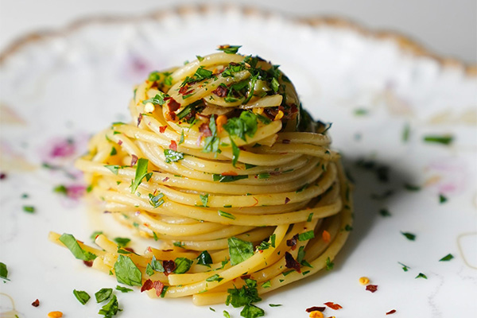

Pasta Aglio e Olio

Pasta Aglio e Olio, originating from Naples, is the epitome of Italian
simplicity. This dish, translating to "garlic and oil," relies on a
handful of ingredients to create a satisfying and aromatic pasta
experience. The combination of garlic, red pepper flakes, and
good-quality olive oil showcases the essence of Italian cooking—allowing
the flavors of few ingredients to shine.
What You'll Need
- 400g spaghetti or linguini
- 1/2 cup extra virgin olive oil
- 6 cloves garlic, finely sliced
- 1/2 tsp red pepper flakes, adjust to taste
- Salt and black pepper, to taste
- Fresh parsley, chopped, for garnish
- Grated parmasan cheese, for serving
How To Make It
-
Cook the Pasta: Cook the spaghetti or linguine in a
large pot of salted boiling water until al dente. Reserve 1/2 cup of
pasta water, then drain the pasta.
-
Infuse the Oil: In a large skillet, heat the olive
oil over low heat. Add the sliced garlic and red pepper flakes. Let
the garlic gently infuse the oil until it becomes golden and fragrant,
about 5-7 minutes. Be cautious not to let the garlic brown too much,
as it can become bitter.
-
Season and Toss:Season the garlic oil with salt and
black pepper. Add the cooked pasta directly into the skillet, tossing
it well to coat each strand with the flavorful oil.
-
Adjust Consistency: If the pasta seems dry, add some
of the reserved pasta water to create a silky sauce that clings to the
pasta.
-
Serve:Divide the pasta among plates. Garnish with
fresh parsley and a generous sprinkle of grated Parmesan cheese.
Delight in the simplicity and aromatic richness of this classic Pasta
Aglio e Olio!
Enjoy your homemade Pasta Aglio e Olio, and savor the authentic flavors
of Italy!
Back to Recipes